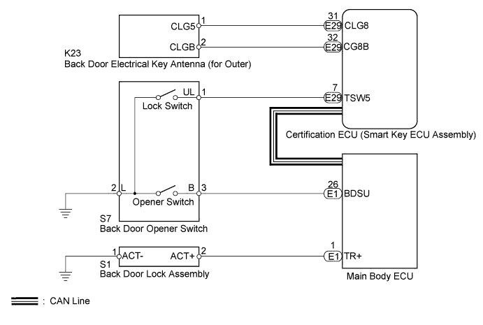
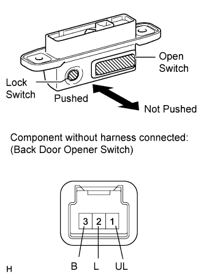
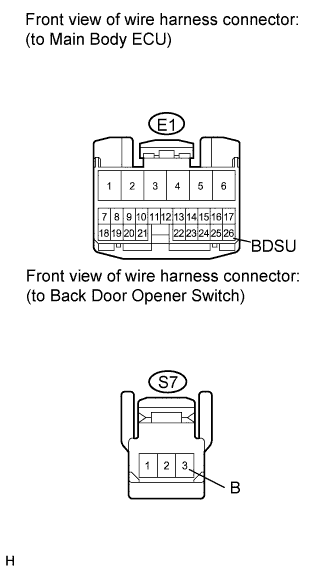

ENTRY AND START SYSTEM (for Entry Function) > Back Door Entry Unlock Function does not Operate |

| 1.CHECK POWER DOOR LOCK OPERATION |
When the door control switch of the master switch assembly is operated, check that the locked doors unlock.
|
| ||||
| OK | |
| 2.READ VALUE USING INTELLIGENT TESTER (BACK DOOR HANDLE SW) |
Using the intelligent tester, read the Data List.
| Tester Display | Measurement Item/Range | Normal Condition | Diagnostic Note |
| Back Door Handle SW | Back door opener switch / ON or OFF | ON: Back door opener switch is pushed OFF: Back door opener switch is not pushed | - |
|
| ||||
| OK | ||
| ||
| 3.CHECK BACK DOOR OPENER SWITCH |
 |
Measure the resistance according to the value(s) in the table below.
| Tester Connection | Switch Condition | Specified Condition |
| 1 (UL) - 2 (L) 3 (B) - 2 (L) | Not pushed | 10 kΩ or higher |
| 1 (UL) - 2 (L) | Lock switch pushed | Below 1 Ω |
| 3 (B) - 2 (L) | Open switch pushed | Below 1 Ω |
|
| ||||
| OK | |
| 4.CHECK HARNESS AND CONNECTOR (MAIN BODY ECU - BACK DOOR OPENER SWITCH) |
 |
Disconnect the E1 ECU connector.
Disconnect the S7 switch connector.
Measure the resistance according to the value(s) in the table below.
| Tester Connection | Condition | Specified Condition |
| E1-26 (BDSU) - S7-3 (B) | Always | Below 1 Ω |
| E1-26 (BDSU) or S7-3 (B) - Body ground | Always | 10 kΩ or higher |
|
| ||||
| OK | ||
| ||